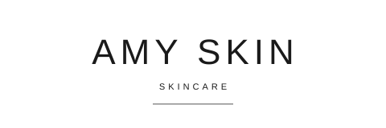

Amy Skin — Visual Identity (VI)
Chosen direction: E — Sans Caps, spaced uppercase AMY SKIN. Wordmark only, no motif: light sans-serif capitals, wide tracking, “SKINCARE” small below, one hairline. Big-brand luxury by restraint. Directions D and F were not chosen and their files are removed from this VI. The full website is built later from this VI; this page is the VI set itself.
Primary logo — AMY SKIN
File: assets/img/logo-e.svg — transparent background, single colour Ink #1A1A1A. Use this version everywhere unless a rule below says otherwise. Never redraw, re-space or re-typeset the wordmark; always use the file.
Colours — primary & secondary
Primary
wordmark, headings, buttonsWhite #FFFFFF
backgrounds, reversed text
Secondary
body textWarm Grey #8A8378
fine rules, captionsIvory #FAF8F5
backgrounds, boxesLine #E5E0D5
borders, dividers
Rule: the logo appears only in Ink #1A1A1A or in White #FFFFFF (reversed). Never in any other colour, never in grey, never on a busy background. The product, its formula and its packaging carry colour; the logo stays neutral.
Fonts
| Use | Font | Setting |
|---|---|---|
| Wordmark | Arial / Helvetica, Light 300 | Capitals, 44 pt, tracking 12; sub-line “SKINCARE” 11 pt, tracking 6; hairline 0.75 pt |
| Website headings | Arial / Helvetica, Bold 700 | Sentence case, Ink #1A1A1A |
| Body text | Arial / Helvetica, Regular 400 | Charcoal #333333, 16 px / 1.65 |
| Captions, rules | Arial / Helvetica, Regular 400 | Warm Grey #8A8378, letterspaced capitals |
System fonts only — no webfont dependency, print-safe, identical on screen and in print proofs.
Clear space & minimum size
Clear space: keep one cap-height “x” empty on all four sides of the logo, where x = the height of the capital “A”. Nothing — no text, no rule, no image edge — enters the clear space.
x = cap height of “A” — on all sides
Minimum size: 20 mm wide in print / 100 px wide on screen, for both the primary and the narrow variant. Never use the logo below minimum size.
Size scale (digital): 

 ✕ 60 px — too small, do not use
✕ 60 px — too small, do not use
Single-colour, reversed & narrow variant
Primary — single colour
File: assets/img/logo-e.svg. Black on light, one colour only.
Reversed
File: assets/img/logo-e-rev.svg — White #FFFFFF, for Ink #1A1A1A backgrounds, dark packs and dark boxes only. Never use the reversed file on a light background.
Narrow variant — for narrow packaging

File: assets/img/logo-e-narrow.svg — same wordmark, tracking reduced from 12 to 6 (sub-line 6 to 4), hairline shortened. Use it only where the pack face is narrower than 90 mm, i.e. tubes and sheet-mask pouches. Everywhere else, use the primary version. Never use the narrow variant on wide packs, and never squeeze or stretch the primary version to fit.
Do: one colour only · keep clear space · use the narrow variant on narrow packs · use reversed on dark. Do not: add colour · add a motif, petal, leaf or arch · stretch, outline or shadow the wordmark · place it on a busy background · use it below minimum size.
Bottle label & box mockups — all product types
The same E logo on every product type. Primary version except tubes and mask pouches, which use the narrow variant.
Label rule: the logo is the only brand mark on the pack. Product name, format and size go below it in small letterspaced capitals (Warm Grey #8A8378). No other brand, no Chinese text on packaging.
Website colour scheme (from this VI)
--ink: #1A1A1A; /* headings, buttons, links */ --body: #333333; /* body text */ --grey: #8A8378; /* captions, fine rules */ --bg: #FAF8F5; /* hero / ivory backgrounds */ --card: #FFFFFF; /* cards, header */ --line: #E5E0D5; /* borders, dividers */
Buttons are Ink #1A1A1A with White text; ghost buttons are White with an Ink border; links are Ink #1A1A1A. The WhatsApp button keeps WhatsApp green — it is a functional channel button, not a brand colour. The homepage is updated to this scheme.
Launch Your Brand, Low MOQ, Ready Formulas & Custom Formulation.
Get a QuoteLogo files in this repo
| File | Use |
|---|---|
assets/img/logo-e.svg | Primary logo — Ink #1A1A1A, transparent, everywhere by default |
assets/img/logo-e-rev.svg | Reversed logo — White #FFFFFF, dark backgrounds only |
assets/img/logo-e-narrow.svg | Narrow variant — tracking 6, packs under 90 mm wide (tubes, mask pouches) |
Directions D and F were not chosen; their files are removed from the VI. Contact: WhatsApp +86 189 2882 3858 · info@amyskinoem.com